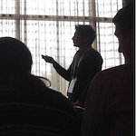

I am part of the R&D team at Mosek ApS, where I help develop and maintain the Mixed Integer Programming code. Before that I obtained a Ph.D. in Automatic Control Systems and Operational Research from the University of Bologna, and an M.Sc. and a B.Sc. in Mathematics from the University of Hamburg. I also worked in applied OR and as a Data Scientist at Optit.
My professional and research interests lie in applications and methodologies of Mathematical Optimization. Ckeck out my Google Scholar profile for publications.